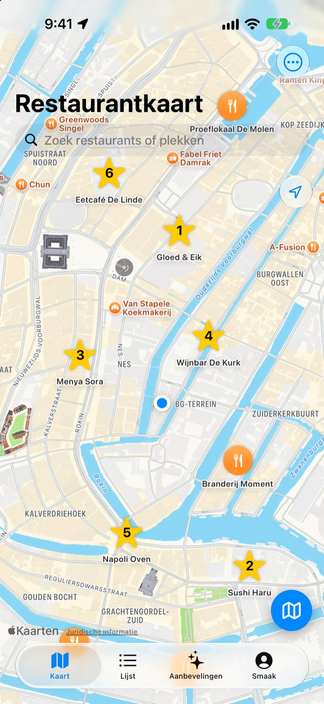
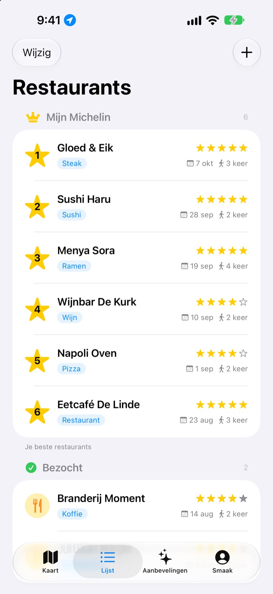
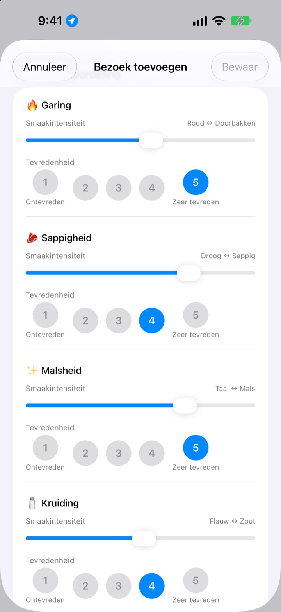
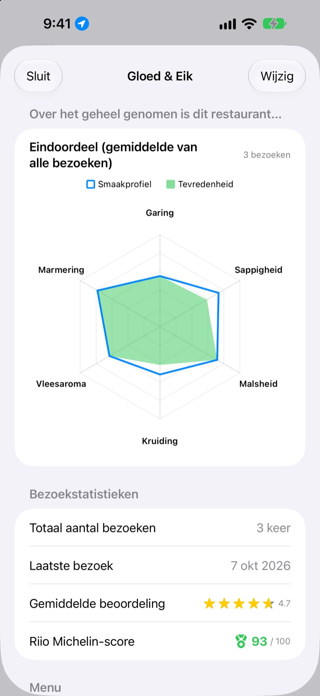

Nooit meer vergeten
waar het zo lekker was
Zet de restaurants waar je was en die je wilt proberen op de kaart, en noteer bij elk bezoek wat je bestelde, foto’s en de smaak. Weet je niet waar je wilt eten? Je eigen notities hebben het antwoord.
Alle functies zijn gratis. Geen registratie, alles blijft op je iPhone.

Beoordeel een gerecht
Kies een soort eten en stel in hoe sterk elke smaak was en hoe goed je hem vond. Dezelfde punten en dezelfde berekening als een bezoek in de app.
Het was heerlijk, maar wat had ik nou besteld?
Je weet nog dat het restaurant geweldig was, maar de naam is vaag, en wat je bestelde of de bouillon te zout was, weet je al helemaal niet meer. Dus zoek je opnieuw en lees je reviews van vreemden. Insaeng bewaart wat je zelf hebt geproefd op een kaart, zodat je volgende keuze op je eigen ervaring rust.
Bezocht, Wil ik proeven en je eigen Michelin
Zoek op de kaart of tik op een plek in de buurt en hij is meteen bewaard. Houd plekken waar je was apart van die je wilt proberen, en rangschik je zes favorieten van 1 tot 6.
Vraagt iemand om een tip, laat dan gewoon de lijst zien.

Vragen die bij het gerecht passen
Hoe sterk een smaak was, zoals pittig of zout, stel je in met een schuifregelaar, en hoe goed je het vond beoordeel je apart van 1 tot 5. Bij steak gaat het om garing en sappigheid, bij sushi om rijst en vis, bij ramen om bouillon en noedels.
Elk bezoek bewaart ook gerecht, foto’s, sterren en notities.

Waar je terug wilt, zie je in cijfers
Na meerdere bezoeken toont elk restaurant een eindoordeel met het gemiddelde van alle bezoeken en een Riio Michelin-score op 100 die sterren en tevredenheid combineert.
Verlaat je een bewaard restaurant, dan krijg je even later een herinnering om je bezoek te noteren.

In drie stappen aan de slag
- 1
Bewaar een restaurant
Zoek op de kaart of tik op een plek in de buurt.
- 2
Noteer je bezoek
Gerecht, foto’s, sterren en smaak. De smaakbeoordeling is optioneel.
- 3
Kies het volgende
Bekijk je top 6 en scores en navigeer met Apple Kaarten, Kakao Map of Naver Map.
Wat je per soort eten beoordeelt
- 🍽️ Algemeen
- Pittigheid, Intensiteit, Zoetheid, Zoutheid, Vettigheid, Eigen smaak
- 🥩 Steak
- Garing, Sappigheid, Malsheid, Kruiding, Vleesaroma, Marmering
- 🍣 Sushi
- Shari (rijst), Neta (vis), Wasabi, Balans, Vorm, Temperatuur
- 🍜 Ramen
- Bouillon, Noedels, Chashu, Toppings, Temperatuur, Balans
- 🍕 Pizza
- Deeg, Saus, Kaas, Garing, Toppings, Balans
- 🍷 Wijn
- Body, Tannine, Zuurgraad, Aroma, Afdronk, Balans
- ☕ Koffie
- Zuurgraad, Body, Smaak, Nasmaak, Zoetheid, Balans
Al het andere eten beoordeel je met de algemene punten uit de eerste rij. Je kunt ook eigen categorieën maken.
Veelgestelde vragen
Hoe voeg ik een restaurant toe?
Typ de naam van het restaurant in het zoekveld boven de kaart en tik in de resultaten op ‘Toevoegen aan mijn restaurants’. Je kunt ook op een plek in de buurt tikken die op de kaart staat om die direct toe te voegen. Vind je een restaurant niet via zoeken, voeg het dan zelf toe op je huidige locatie of op een plek die je op de kaart kiest.
Wat betekenen Geweest, Nog proberen en Top 6?
Geweest: restaurants waar je al bent geweest. Hier kun je je bezoeken vastleggen. Nog proberen: restaurants die je ooit nog wilt proberen. Ben je er geweest, zet het dan op het detailscherm van het restaurant over naar Geweest. Top 6 (jouw Michelin): rangschik je zes favoriete restaurants van 1 tot en met 6. Restaurants onder Nog proberen kunnen niet in je top 6.
Moet ik een smaakbeoordeling invullen?
Nee, dat is optioneel. Als je beoordeelt, tellen smaakintensiteit en tevredenheid mee in het eindoordeel van het restaurant en in de Riio Michelin-score.
Wanneer krijg ik de melding ‘Hoe was je bezoek vandaag?’
Als je langer dan 5 minuten bij een bewaard restaurant bent geweest en weer vertrekt, krijg je ongeveer 40 minuten later een melding. Hiervoor moet je locatietoegang op ‘Altijd’ zetten en meldingen toestaan. Wil je deze meldingen niet, zet dan in Instellingen > Apps > Insaeng de meldingen uit of zet locatietoegang op ‘Bij gebruik van app’. Je locatie wordt alleen op je toestel gecontroleerd. Je route wordt niet bewaard en nergens naartoe gestuurd.
Werkt de app ook zonder locatietoegang?
Jazeker. Je kunt zelf een plek op de kaart kiezen om een restaurant toe te voegen en je bezoeken vast te leggen. Alleen je huidige locatie tonen en de herinnering na een bezoek werken dan niet.
Ik krijg geen zoekresultaten
Voor het zoeken naar plekken heb je een internetverbinding nodig. Probeer het opnieuw met een andere naam of een korter zoekwoord. Lukt het nog steeds niet, kies dan een plek op de kaart en voeg het restaurant zelf toe.
Waar worden mijn gegevens bewaard? Worden ze gesynchroniseerd met andere apparaten?
Je restaurants, bezoeken en foto's worden alleen op deze iPhone bewaard. De huidige versie synchroniseert niet met andere apparaten, en de iCloud-back-up en -herstelfunctie in de instellingen werkt nog niet. Een volledige back-up van je iPhone (via iCloud of via je computer) bevat de appgegevens wel.
Ik wil al mijn gegevens wissen
Tik in de instellingen op het kaartscherm op ‘Alle gegevens wissen’ om je restaurants en bezoeken te verwijderen. Dit kun je niet ongedaan maken, dus let goed op. Wil je ook alle foto's volledig wissen, verwijder dan de app.
Blijven mijn gegevens bewaard als ik de app verwijder en opnieuw installeer?
Nee. Je gegevens staan alleen op je toestel, dus als je de app verwijdert, worden ze ook gewist. Denk hier goed over na voordat je de app verwijdert.
Is echt alles gratis?
Ja. Alle functies zijn gratis, zonder advertenties en zonder account. ‘Steun de ontwikkelaar’ in de instellingen is helemaal vrijwillig en ontgrendelt niets.
Staat je vraag er niet tussen? Stuur hem dan rechtstreeks via Instellingen > Ondersteuning in de app, of mail naar mizzking75@gmail.com. Vermeld je appversie, je iPhone-model en wat je op welk scherm deed, dan kunnen we sneller helpen.